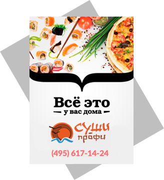

Компания Суши-Профи — это настоящая команда профессионалов, много лет проработавших в лучших японских ресторанах Москвы. В нашей работе собран передовой опыт, глубокое знание японской кухни, всех нюансов приготовления блюд, - всё самое лучшее.
О нас
Именно поэтому нас выбирают самые взыскательные клиенты.
Наш девиз: готовим с любовью, доставляем с радостью!
Качественно готовим!
Профессиональное оборудование. В японской кухне не бывает мелочей – самым лучшим должно быть всё, и рисоварки, и доски для нарезки рыбы, и ножи, и многое другое. Мы используем самое высококачественное, профессиональное оборудование.
Сертифицированное пищевое производство. Спроектировано с учётом специфики японской кухни и самых строгих требований по чистоте и культуре производства. Производство построено в полном соответствии с утверждённым надзорными органами проектом, регулярно проходит все необходимые процедуры санобработки и контроля.
Высококвалифицированные повара, постоянный контроль шеф-повара. Наша внутренняя система документооборота не пропускает ни одного блюда без персонального контроля и надзора опытного шеф-повара. Вот почему все наши клиенты говорят: «Да, КЛАСС!».
Очень вкусно!
Изысканные рецепты.
Весь ассортимент наших блюд складывается из оригинальных блюд японской кухни и блюд, составленных по рецептам шеф-повара. Все блюда готовятся в точном соответствии технологическим картам, без замен ингредиентов, полновесные порции и щедрые граммовки – вот залог того что наши клиенты говорят: «ДА, очень вкусно!».
Только самые свежие и сертифицированные, экологически чистые продукты!
Вся продукция сертифицирована, проходит тщательный контроль поваров и постоянный надзор со стороны шеф-повара. Самое бережное и правильное хранение и быстрый оборот продукции позволяет нам донести до наших гостей продукты в их первозданной свежести и вкусе.
Никаких заготовок – готовим только с момента заказа.
Японская кухня, и настоящие ценители это знают, - это продукция высочайшей свежести, и все суши или роллы «из холодильника» - это табу для нас. Заказывая у нас Вы можете быть уверены в том что получите настоящие суши и роллы!

Быстрая и качественная доставка!
Бережная доставка.
Суши и роллы – очень нежные блюда, требующие для сохранения вкуса и качества тщательного выдерживания температурного режима. Вот почему каждый заказ мы тщательно упаковываем и доставляем нашим клиентам в специальных, - сертифицированных термосумках. Поэтому все горячие блюда Вы получаете горячими, а все суши и роллы – той оптимальной температуры, которая им требуется, с сохранением первозданной свежести и полезных качеств продуктов.
Логистика продумана – доставляем точно в срок. Вот почему все наши клиенты говорят: «ДА, точно в срок!».
Доставка – бесплатно! Минимальный заказ в пределах МКАД – от 750 руб., в Бутово, Солнцево, Митино, Новокосино, Жулебино и пос. Мосрентген – от 1000 руб.
Доставка суши в Пушкино и Ивантеевке осуществляется нашим партнёром - Евразия кафе.
Быстро! Удобно! Выгодно!
Оплатить свой заказ Вы можете как наличными курьеру, так и кредитной картой или электронными деньгами.
Скидки при повторных заказах. Продуманная система скидок делает заказы у нас необычайно привлекательными: постоянные клиенты получают скидку до 10% на все заказы. Именно поэтому наши клиенты говорят: «Да, ВЫГОДНО!».
Скидки для постоянных покупателей:
- со второго заказа - 2%
- с четвёртого заказа - 4%
- с шестого заказа - 7%
- с восьмого заказа - 10%
Скидки на День рождения.
Мы ценим своих клиентов, и нам всегда приятно сделать небольшой подарок: ко дню рождения наши клиенты получают скидку 20%!
Подарки при заказах.
Каждый Ваш заказ не только увеличивает Вашу персональную скидку, но и сопровождается бонусом от нас – Вы можете выбрать роллы в подарок, или получить подарочный набор из горячего ролла Темпура и Кока-Колы! Вот почему наши клиенты говорят нам «ДА, спасибо!»
Рекомендации друзьям увеличивают и Вашу скидку!
Каждый заказ, который Ваши друзья делают, упоминая Ваш контактный телефон – защитывается нашей бонусной системой и Вам и Вашим друзьям.
Быстро!
Можно заказывать в «один клик»
- повторяя предыдущие заказы. Для тех кто часто заказывает суши на сайте доступная функция повторного заказа. Мы рядом – на расстоянии одного клика!
Заказ по телефону или через интернет.
Мы принимаем заказы как Вам удобно – либо по телефону, либо на нашем сайте, где удобная навигация и подробные описания всех блюд позволяют Вам сделать заказ быстро и обдуманно. Вот почему все наши клиенты говорят – «ДА, УДОБНО!».
Быстрый заказ – оставьте свой номер телефона и мы моментально свяжемся с Вами!
Удобная регистрация на сайте!
Доступ к истории ВСЕХ заказов, и телефонных и через интернет. Зарегистрировавшись у нас на сайте, Вы получаете возможность видеть все свои предыдущие заказы независимо от того как вы их делали, выставлять оценки – свой персональный рейтинг блюд, а также смотреть оценки и отзывы других наших гостей о всех блюдах.
Будьте всегда в курсе текущих спец.предложений. Зарегистрировавшись на нашем сайте – вы не пропустите наши лучшие спецпредложения, подарки и рекламные акции, которые мы регулярно проводим.
Роскошное меню - богатый выбор!
Большое меню. У нас вы найдёте, пожалуй, самое обширное японское меню: 400 наименований блюд – для доставки! Самые разнообразные суши, роллы – классические и оригинальные, онигири, сашими, салаты и горячее, десерты и напитки. Вот почему все наши клиенты говорят – «ДА, отличный выбор!».
Половинки роллов. Теперь вы можете заказывать по «половинке» роллов, чтобы ещё более разнообразить свой обед или ужин, попробовать максимум новых блюд. Именно поэтому все наши клиенты говорят – «Да, ЗДОРОВО!».
Новые блюда. Наше меню постоянно расширяется и дополняется с учётом Ваших пожеланий. Мы анализируем все Ваши впечатления от блюд, пожелания по меню и регулярно добавляем новые блюда. Вот почему все наши клиенты говорят – «Да, РАЗНООБРАЗНО!».